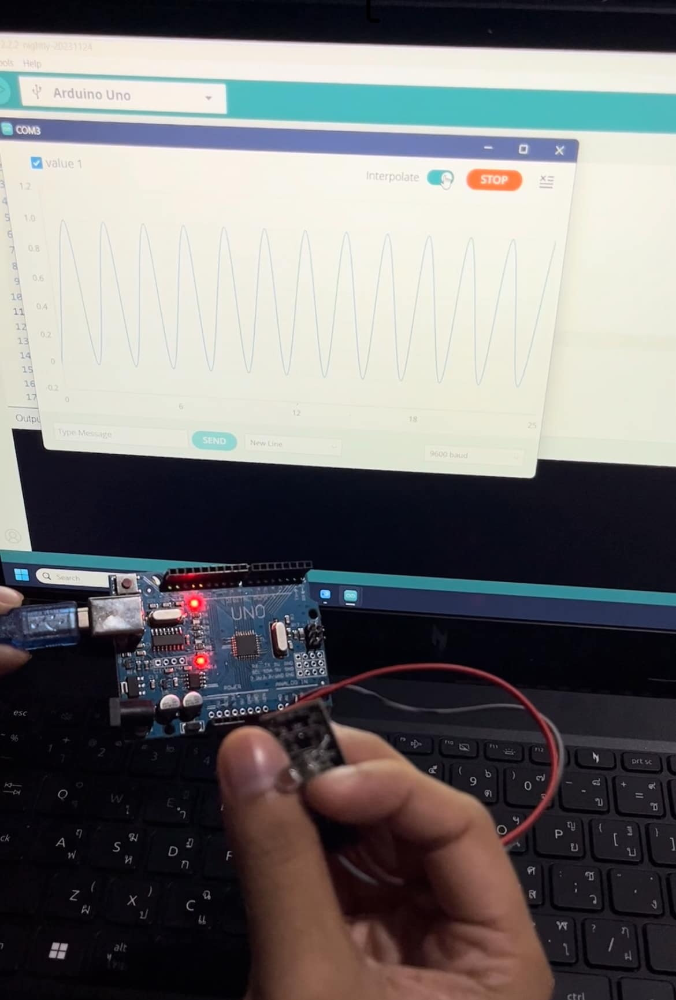
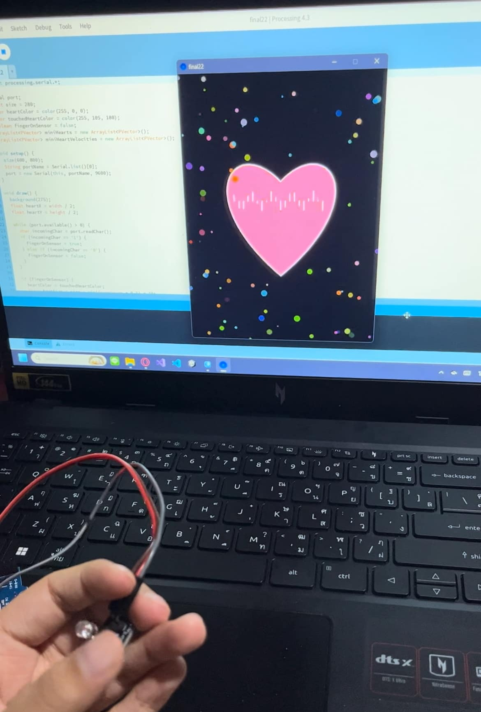
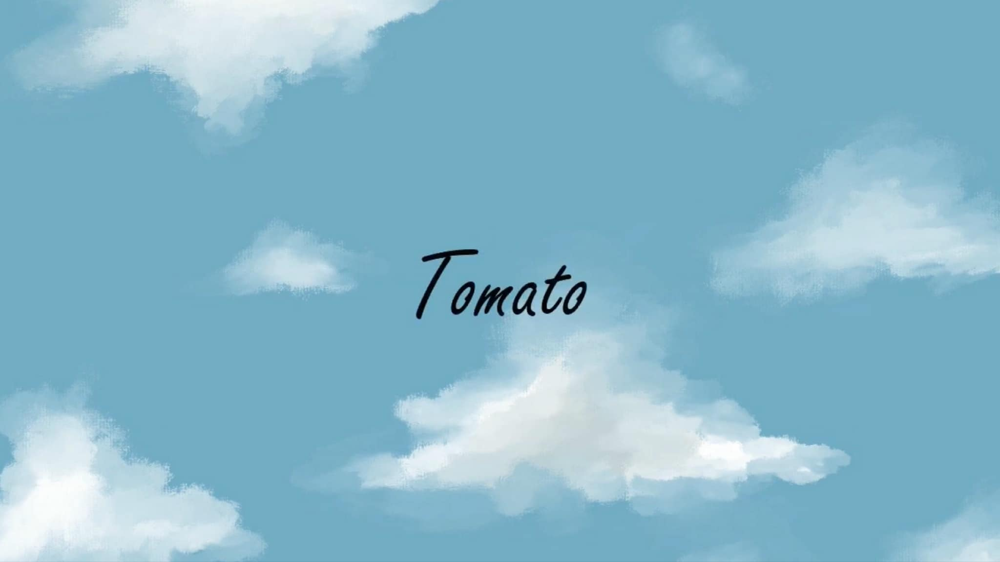
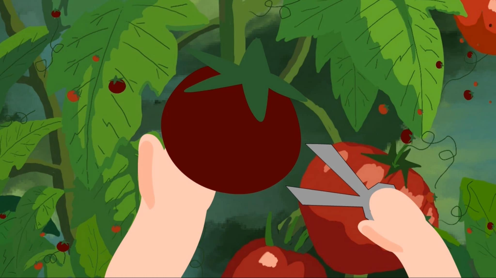
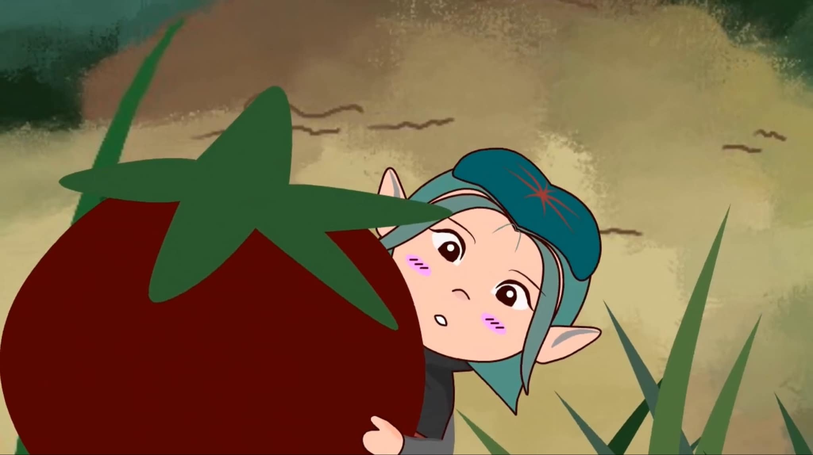

My Projects
Projects 1
 Heartbeat
เซนเซอร์ทำงานโดยปล่อยแสงอินฟาเรดผ่านนิ้วมือ แล้วอีกฝั่งจะมีเซนเซอร์ตรวจจับแสงอินฟาเรด ซึ่งสามารถวัดความเข้มแสงที่ถูกดูดซับโดยนิ้วมือ มาแสดงเป็นอัตราการเต้นของหัวใจได้ และแสดงผลทางกราฟิกใน Processing เป็นรูปหัวใจที่ปรับเปลี่ยนตามจังหวะการเต้น
Projects 2
  Animation Potato
เป็นเรื่องราว สาวน้อยเอลฟ์คนหนึ่งกำลังดูแลพืชผลเมืองมะเขือเทศของเธอและมีชายมนุษย์เดินเข้ามาเก็บผลมะเขือเทศในสวน จึงเป็นจังหวะที่เอลฟ์สาวน้อยได้ตกหลุมรักชายมนุษย์และได้เฝ้ามองชายมนุษย์ มีวันหนึ่งชายคนนี้ได้ เห็นเอลฟ์สาวน้อยตรงหน้าต่าง และแอบดูสาวน้อยเอลฟ์ด้วยความสนใจ เค้าจึงรีบออกไปและรีบจำสาวน้อยเอลฟ์ สาวน้อยดีใจมากที่เค้ามองด้วยสายตาหลงใหล ละชายมนุษย์จึงยื่นมือมาจับตัวเอลฟ์ไป เอลฟ์มีความสุขมาก สุดท้ายชายมนุษย์กลับนำเอลฟ์ไปทำเป็นซอสมะเขือเทศ
Tomato Animation